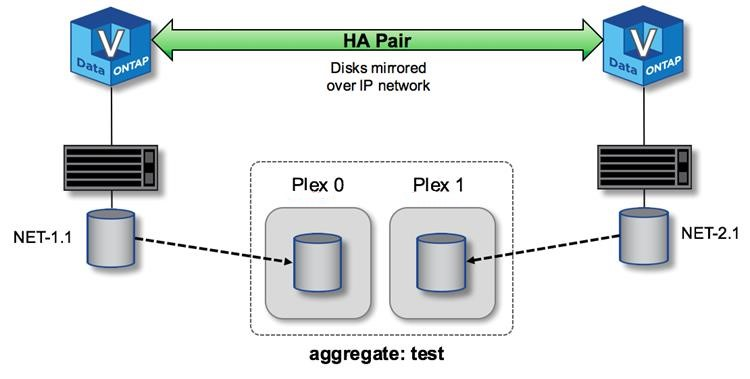
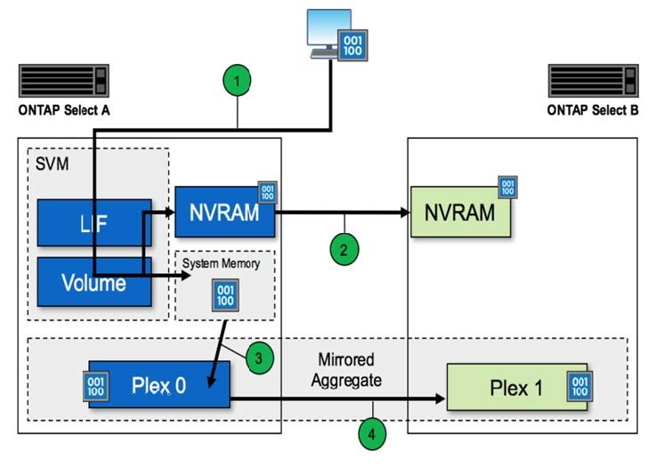

要求變更文件
要求變更文件 編輯此頁面
編輯此頁面 瞭解如何作出貢獻
瞭解如何作出貢獻HA RSM與鏡射Aggregate
使用RAID SyncMirror 功能（RSM2）、鏡射集合體和寫入路徑來防止資料遺失。
同步複寫
此功能是以HA合作夥伴的概念為基礎打造而成。ONTAP透過使用支援RAID功能（RSMs）、將此架構延伸至非共享的市售伺服器世界、此功能可在叢集節點之間複寫資料區塊、並在HA配對之間提供兩份使用者資料複本。ONTAP Select SyncMirror ONTAP
具有中介器的雙節點叢集可橫跨兩個資料中心。如需詳細資訊、請參閱一節 "雙節點延伸HA MetroCluster （簡稱「架構SDS」）最佳實務做法"。
鏡射Aggregate
一個由兩到八個節點組成的叢集。ONTAP Select每個HA配對都包含兩份使用者資料複本、透過IP網路在節點之間同步鏡射。此鏡射對使用者而言是透明的、而且是資料集合體的屬性、會在資料集合體建立程序期間自動設定。
在發生節點容錯移轉時、必須鏡射整個叢集中的所有集合體ONTAP Select 、以確保資料可用度、並避免發生硬體故障時出現SPOF。叢集中的Aggregate ONTAP Select 是從HA配對中的每個節點所提供的虛擬磁碟建置、並使用下列磁碟：
-
本機磁碟集（由目前ONTAP Select 的節點所提供）
-
鏡射磁碟集（由目前節點的HA合作夥伴提供）

|
用來建置鏡射Aggregate的本機磁碟和鏡射磁碟大小必須相同。這些集合體稱為plex 0和plex 1（分別表示本機和遠端鏡像配對）。實際的叢數在您的安裝中可能有所不同。 |
這種方法與標準ONTAP 的仰賴叢集運作方式有根本的不同。這適用於ONTAP Select 整個叢集內的所有根磁碟和資料磁碟。Aggregate同時包含本機和鏡射資料複本。因此，包含N個虛擬磁碟的集合體可提供不含2個磁碟的獨特儲存容量，因為第二個資料複本位於其專屬的磁碟上。
下圖顯示四節點ONTAP Select 的叢集內的HA配對。在此叢集中、是使用兩個HA合作夥伴儲存設備的單一集合體（測試）。此資料Aggregate由兩組虛擬磁碟組成：由ONTAP Select 故障轉移合作夥伴（Plex 1）所提供的實體叢集節點（Plex 0）所構成的本機磁碟集、以及遠端磁碟集。
Plex 0是存放所有本機磁碟的儲存區。Plex 1是存放鏡射磁碟的儲存區、或是負責儲存第二個使用者資料複本的磁碟。擁有Aggregate的節點會將磁碟貢獻給Plex 0、而該節點的HA合作夥伴則會將磁碟貢獻給Plex 1。
下圖中有一個鏡射Aggregate、其中包含兩個磁碟。此Aggregate的內容會鏡射至我們的兩個叢集節點、並將本機磁碟NET-1.1放入Plex 0儲存區、並將遠端磁碟NET-2.1放入Plex 1儲存區。在此範例中、Aggregate測試由左側的叢集節點擁有、並使用本機磁碟NET-1.1和HA合作夥伴鏡射磁碟NET-2.1。
*鏡射Aggregate * ONTAP Select 
|
|
部署一個叢集時ONTAP Select 、系統上的所有虛擬磁碟都會自動指派給正確的叢集、不需要使用者就磁碟指派採取額外步驟。如此可防止意外將磁碟指派給不正確的叢、並提供最佳的鏡射磁碟組態。 |
寫入路徑
在叢集節點之間同步鏡射資料區塊、以及在系統故障時不需遺失資料、對於傳入寫入透過ONTAP Select 叢集傳播時所採用的路徑、會造成重大影響。此程序包含兩個階段：
-
確認
-
減少需求
寫入目標磁碟區的作業會透過資料LIF進行、並將寫入到虛擬化的NVRAM分割區、此分割區會出現在ONTAP Select 節點的系統磁碟上、然後再確認回用戶端。在HA組態上、會執行額外的步驟、因為這些NVRAM寫入作業會在確認之前、立即鏡射到目標磁碟區擁有者的HA合作夥伴。如果原始節點發生硬體故障、此程序可確保HA合作夥伴節點上的檔案系統一致性。
將寫入作業提交至NVRAM後、ONTAP 將此分割區的內容定期移至適當的虛擬磁碟、這是稱為「減少磁碟空間」的程序。此程序只會在擁有目標Volume的叢集節點上執行一次、而不會發生在HA合作夥伴上。
下圖顯示傳入寫入要求至ONTAP Select 某個節點的寫入路徑。
不寫入路徑工作流程 ONTAP Select 
傳入寫入認可包括下列步驟：
-
寫入會透過ONTAP Select 由節點A擁有的邏輯介面進入系統
-
寫入作業會提交至節點A的NVRAM、並鏡射至HA合作夥伴節點B
-
在兩個HA節點上都有I/O要求之後、該要求會被確認回用戶端。
從NVRAM降級至資料集合體（RACP）包括下列步驟：ONTAP Select ONTAP
-
寫入作業會從虛擬NVRAM移轉至虛擬資料Aggregate。
-
鏡射引擎會將區塊同步複寫到兩個叢集中。